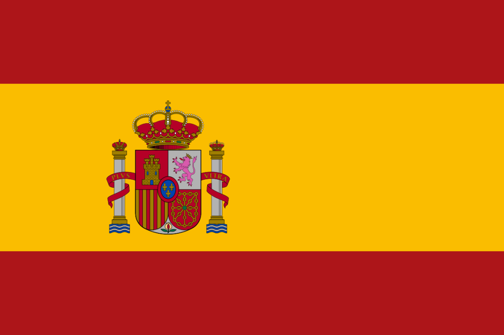
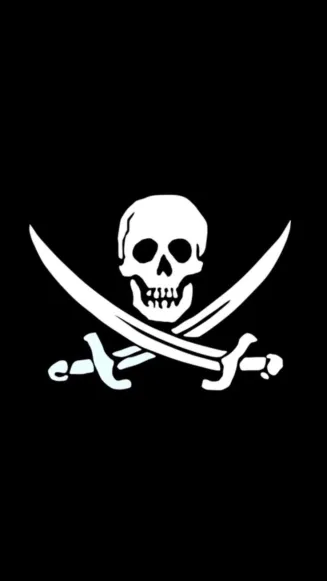
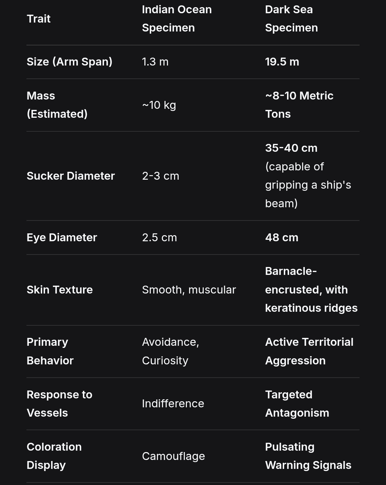
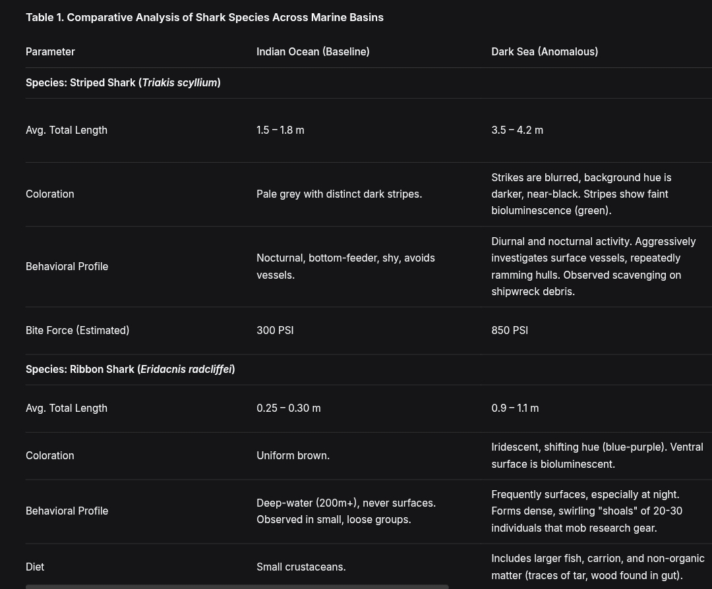

The glorious maritime nation under the wise rule of our sacred Emperor.
P.S. To be able to log in you need to head to the Contact section — then apply for citizenship — then after all the process are done you will receive your ID and data to log in.
The Empire of Sacred Daniel is a sovereign maritime state born from defiance, bound by loyalty, and forged upon the waves. Its history stretches back to 33 A.D., when the first Daniel seized a Roman trireme and witnessed the rise of the Kraken from the depths. Through centuries of piracy, war, and imperial expansion, the Empire has endured as a beacon of honor, brotherhood, and naval supremacy.
Today, the Empire continues its traditions — from the Cult of the Kraken to the Legion of the Squid — and welcomes those who seek citizenship in a realm where the sea is not merely territory, but destiny itself.
Славная морская держава подъ мудрымъ правленiемъ нашего Священнаго Императора.
P.S. Чтобы войти, вамъ нужно перейти въ разделъ Контактовъ — затемъ подать заявку на гражданство — после завершенiя всѣхъ процедуръ вы получите свой ID и данные для входа.
Имперiя Священнаго Данiила — суверенная морская держава, рожденная изъ непокорства, скрѣпленная вѣрностью и выкованная на волнахъ. Ея исторiя восходитъ къ 33 году н.э., когда первый Данiилъ захватилъ римскую трiеру и узрѣлъ, какъ изъ глубинъ поднимается Кракенъ. Черезъ вѣка пиратства, войнъ и имперской экспансiи Имперiя устояла какъ маякъ чести, братства и морского превосходства.
Нынѣ Имперiя продолжаетъ свои традицiи — отъ Культа Кракена до Легiона Кальмара — и привѣтствуетъ тѣхъ, кто ищетъ гражданства въ государствѣ, гдѣ море — не просто территорiя, но сама судьба.
Sacred Daniel's Empire is a small sovereign state with an absolute monarchy located on the coast, with a strong focus on maritime activities. The country's economy is driven by fishing, trading, shipbuilding — in short, the sea is the main reason why this empire is even alive.
Its picturesque coastline offers stunning views and opportunities for tourism, attracting visitors from around the world. The culture of the country is deeply rooted in its maritime heritage, with traditional sailing practices and customs celebrated and preserved.
Sacred Daniel's Empire is known for its vibrant coastal communities, bustling ports, increased crime rate, and wise leaders.
Священная Имперiя Данiила — небольшое суверенное государство съ абсолютной монархiей, расположенное на побережье, съ сильнымъ акцентомъ на морскую дѣятельность. Экономика страны движима рыболовствомъ, торговлей, кораблестроенiемъ — короче говоря, море есть главная причина, по которой эта имперiя вообще существуетъ.
Ея живописная береговая линiя предлагаетъ захватывающiе виды и возможности для туризма, привлекая посѣтителей со всего мiра. Культура страны глубоко укоренена въ ея морскомъ наслѣдiи, съ традицiонными морскими практиками и обычаями, которыя празднуются и сохраняются.
Священная Имперiя Данiила извѣстна своими яркими прибрежными сообществами, оживлёнными портами, повышеннымъ уровнемъ преступности и мудрыми лидерами.
Titles: The First Daniel, Lord of the Black Angels, Prophet of the Kraken, The Sea-Father
Era: 1st Century A.D. and beyond (Beginning 33 A.D.)
Sacred Vessel: The Mini Angel (Originally a Roman Trireme)
P.S: There are at least 3 Daniels in card. The first one, His son and grandson who later will pronounce empire and himself as an emperor.
Lord Daniel is not merely a historical figure; he is the cornerstone of a nation and a faith. His story begins in the pivotal year 33 A.D., in the immediate, disillusioned aftermath of the Crucifixion of Jesus Christ. Unlike the masses, Daniel did not mourn; he was filled with disgust and fear at the event. This rejection of the established divine order was the catalyst for his destiny.
In an act of supreme defiance, he gathered a band of outcasts: thieves, mercenaries, and runaway slaves, and under cover of darkness, they seized a Roman trireme, slaughtering its crew. This ship, the very next day, would be christened the Mini Angel, the first sacred vessel of a new future empire.
The founding miracle occurred on the second day of their voyage. The sea turned black, and from the depths rose the Kraken, a colossal entity that Daniel interpreted not as a monster, but as a new God. While his crew trembled, Daniel stood firm and received his revelation. He declared to his followers: "There is no God left but the Kraken. And we are his sons and daughters."
Daniel possessed a transcendent form of leadership. He found a crew of pathetic land-rats ready to betray each other for a piece of stale bread and, through his will and vision, forged them into pirates living by a code of honor, dignity, and respect for women. It was under Daniel's rule that this disparate band evolved into a disciplined clan, the "Black Angels."
Daniel's reign was one of relentless expansion and confrontation with the unknown. His voyage to the forbidden Island in 1100 A.D. showcases his courage and the limits of his power. His final log entry: "They feared not us. They fled from something else... something in the high valleys."
The Eternal Rival: Admiral James Norridon
Daniel's character is further defined by his long-standing conflict with Admiral James Norridon of the Royal Navy. Despite the bloodshed, Daniel deeply admired Norridon for his honor. In his old age, it is said that Daniel would toast his rival: "To Norridon. May the depths be kinder to him than I ever was."
Lord Daniel's life laid the foundation for everything that follows: the Mini Angel, the Cult of the Kraken, the principles of honor and brotherhood, and the imperial title that every ruler to follow would bear.
Title: Sacred Emperor of the Empire of Sacred Daniel
Era: 18th Century
Notable Vessel: The Sacred Mini Angel (Brig and flagman of the empire)
Character Analysis
Emperor Daniel de Courno was the defining ruler of his age, a sovereign whose intellect and calculated demeanor shaped an era of expansion, reform, and consolidation for his empire. Daniel's most defining trait was his calculating and highly intelligent mind. He was not a man of impulsive action. Every decision was considered numerous times, and even after a course was chosen, he would continue to ponder its ramifications.
Despite his reserved nature, the Emperor possessed undeniable charisma and an easy ability to make friends. This personal charm was a powerful political tool, allowing him to secure alliances, inspire loyalty in his admirals, and present a compelling figurehead to his people.
Unusual for a monarch of his stature, Daniel de Courno was deeply connected to the maritime lifeblood of his empire. He was known to personally take to the seas on his brig, the Sacred Mini Angel.
His reign was profoundly marked by the Archipelago Campaign (1760-1800). A key strategic victory was the alliance with the Scots (1765-1800). Emperor Daniel immediately recognized the opportunity presented by the lost Scottish fleet and transformed a potential threat into a "powerful, temporary navy."
In a final act of strategic calculation, the Empire made the decision to abandon the archipelago in 1800 to pursue greater ambitions elsewhere.
Titles: Imperial Advisor, Keeper of the Archives
Affiliation: The Imperial House of Sacred Daniel
Known For: Unconventional intelligence gathering, profound loyalty, and a life lived in many guises
Arthur Bha was the quintessential man of contrasts. Officially, he was the emperor's highest advisor, a figure most at home in the dim light of the imperial archives. He was a scholar and a diplomat, the meticulous hand that recorded history and guided the emperor with a quiet, reasoned voice.
Yet, the palace walls could not contain him. When the weight of duty became stifling, Arthur would vanish. He was a master of infiltration. He would disguise himself as a common traveler, joining merchant crews, pirate bands, or even buying tickets on noble transports.
His journeys were far from passive. Arthur Bha was a man of direct and often dangerous action: he walked foreign roads, listening to stories and subtly convincing worthy individuals to seek citizenship; he took up bounty hunting; on the far frontiers, he transformed into a gatherer and hunter, foraging for rare plants like cotton shrubs and medicinal herbs while simultaneously tracking wanted criminals.
His very name, Bha, was adopted in honor of Admiral Bharath. Within the empire, Arthur became the silent guardian of the Admiral's legacy, ensuring that Bharath's innovative machines remained in working order.
To the world, he was a diplomat, a scholar, a bounty hunter, and a botanist. But to the emperor, he was simply Arthur Bha—the man who recorded history, guarded its truths, and, when needed, rewrote fate itself with a blade or a pen.
Titles: Admiral of the Imperial Navy, The Cook-Admiral, The Mad Scientist, Emperor (1850-1855)
Era: Mid-to-Late 19th Century
Known For: Naval brilliance, technological innovation, and an unprecedented rise from cabin boy to Emperor
Admiral Bharath's career is a testament to sheer, unyielding stubbornness and latent genius. His story began as a scrawny, orphaned boy on the docks of Volney, spotted by Captains Patih and Joe. He became the ship's cook, a brilliant one, and refused promotions for years.
When fate pushed him into command, Bharath revealed his true genius: he was a master of diplomacy and psychological warfare. His most legendary move during the Archipelago Campaign was the bloodless capture of six islands from a rival fleet, without spending a single grain of gunpowder.
Bharath's mind was never confined to naval tactics. He was a genius inventor and a restless engineer. He designed pulley systems for faster cargo loading, hydraulic pumps, and primitive telegraphs. This created a unique cultural divide in the empire: Bharath's innovations revolutionized the navy and infrastructure, while the Imperial household clung to tradition.
When Emperor Daniel later succumbed to an unknown illness, the empire faced a succession crisis. Admiral Bharath was chosen as the new ruler by the unanimous support of the army and the elite imperial guard.
His reign (1850-1855) was that of a military man struggling with governance. Recognizing his own limitations in politics, he made the humble decision to abdicate in 1855.
Titles: Lord, Captain, City-Builder, High Inquisitor of the Legion of the Squid
Era: 17th-18th Centuries
Known For: A profound transformation from a charismatic nobleman to a fanatical zealot
Lord Def's life is a story of radical transformation, a journey where his core traits of kindness, responsiveness, and incredible intelligence were refined and redirected through extraordinary experiences.
In his youth, he was the epitome of nobility, known for his charm and love for high society. He was a frequent guest at the philharmonic and every prestigious ball, and his sharp mind found a dangerous outlet in a passion for gambling.
Beneath the surface lay Def's true nature: he was fundamentally kind, responsive, and possessed of a formidable intellect. This innate goodness manifested in his role as a patient teacher, where he led merchant convoys not through intimidation, but by schooling raw recruits in seamanship.
His intelligence was both creative and strategic. He was a visionary builder who designed and overseen the construction of an entire fortified city called Fort Green, demonstrating not only architectural genius but also the foresight to terraform the land for sustainable agriculture.
Def was a man who could seamlessly transition from the drawing room to the battlefield. He personally dueled one of the empire's most wanted assassins and threw him into a dungeon. Yet, he also possessed a profound need for solitude, finding peace in the unlikeliest of places: fishing in the heart of the treacherous Dark Sea.
In his later years, the same intensity that once drove him to gambling and city-building found a new, ultimate focus: religious fervor. He went completely to the Legion of the Squid. He ascended to the rank of high inquisitor, preaching the Kraken's will with fire and steel.
Lord Def remains the empire's most complex zealot: a man who built and nurtured, only to become its most relentless purifier.
Титулы: Первый Данiилъ, Повелитель Чёрныхъ Ангеловъ, Пророкъ Кракена, Морской Отецъ
Эпоха: I вѣкъ н.э. и далѣе (начало 33 г. н.э.)
Священное Судно: Мини-Ангелъ (изначально римская трирема)
P.S. Въ карточкѣ фигурируютъ по меньшей мѣрѣ три Данiила. Первый, его сынъ и внукъ, который впослѣдствiи провозгласитъ имперiю, а себя императоромъ.
Лордъ Данiилъ не просто историческая фигура ибо онъ краеугольный камень нацiи и вѣры. Его исторiя начинается въ поворотномъ 33 году н.э., въ горькомъ, полномъ разочарованiя отрезвленiи, наступившемъ сразу послѣ Распятiя Iисуса Христа.
Въ актѣ высшаго неповиновенiя онъ собралъ отрядъ изгоевъ: воровъ, наёмниковъ и бѣглыхъ рабовъ, и подъ покровомъ ночи они захватили римскую трирему, вырѣзавъ ея команду. Уже на слѣдующiй день этотъ корабль былъ нарѣчёнъ «Мини-Ангеломъ».
Чудо-основанiе произошло на второй день плаванiя. Море почернѣло, и изъ глубинъ поднялся Кракенъ. Данiилъ провозгласилъ своимъ послѣдователямъ: «Не осталось иного Бога, кромѣ Кракена. И мы его сыновья и дочери».
Данiилъ обладалъ запредѣльнымъ даромъ лидерства. Именно подъ властью Данiила разрозненный сбродъ превратился въ дисциплинированный кланъ «Чёрныхъ Ангеловъ».
Правленiе Данiила было временемъ неустанной экспансiи. Его плаванiе къ Запретному Острову въ 1100 году н.э. демонстрируетъ предѣлы его власти. Его послѣдняя запись: «Они боялись не насъ. Они бѣжали отъ чего-то иного... чего-то въ высокихъ долинахъ».
Вѣчный Соперникъ: адмиралъ Джеймсъ Норридонъ
Говорятъ, въ старости Данiилъ поднималъ тостъ за своего соперника: «За Норридона. Да будутъ глубины къ нему добрѣе, чѣмъ я когда-либо былъ».
Жизнь Лорда Данiила заложила основу для всего: онъ оставилъ священную реликвiю «Мини-Ангела», основалъ Культъ Кракена, утвердилъ принципы чести и учредилъ императорскiй титулъ.
Титулъ: Священный Императоръ Имперiи Священнаго Данiила
Эпоха: XVIII вѣкъ
Примѣчательное судно: «Священный Мини-Ангелъ»
Императоръ Данiилъ де Курно былъ опредѣляющимъ правителемъ своей эпохи. Самой опредѣляющей чертой Данiила былъ его разсчётливый и крайне острый умъ. Каждое рѣшенiе обдумывалось безчисленное множество разъ.
Несмотря на свою сдержанную натуру, Императоръ обладалъ неоспоримой харизмой. Онъ былъ мыслителемъ, но не затворникомъ.
Необычно для монарха его положенiя, Данiилъ де Курно былъ глубоко связанъ съ морской жизнью, лично выходя въ море на «Священномъ Мини-Ангелѣ».
Его правленiе было отмѣчено Архипелаговой кампанiей (1760–1800). Ключевой побѣдой сталъ союзъ съ шотландцами (1765–1800).
Военной кульминацiей стало уничтоженiе Дублинскаго флота въ 1798 году. Въ 1800 году Имперiя оставила архипелагъ.
Титулы: Имперскiй Совѣтникъ, Хранитель Архивовъ
Принадлежность: Имперскiй Домъ Священнаго Данiила
Извѣстенъ нестандартнымъ сборомъ свѣдѣнiй, глубокой преданностью и жизнью, прожитой во множествѣ обличiй.
Артуръ Бха былъ квинтэссенцiей контрастовъ, оффицiально онъ являлся высшимъ совѣтникомъ императора, фигурой, наиболѣе привычной къ тусклому свѣту имперскихъ архивовъ.
Однако дворцовыя стѣны не могли удержать его. Онъ маскировался подъ обычнаго путешественника, присоединяясь къ командамъ торговцевъ, пиратскимъ шайкамъ. Это дѣлалось изъ глубокой потребности понимать имперiю съ самыхъ низовъ.
Его путешествiя были далеко не пассивными: онъ ходилъ по чужимъ дорогамъ, убѣждая достойныхъ искать гражданства; занимался охотой за головами; на дальнихъ рубежахъ собиралъ рѣдкiя растенiя.
Само его имя, Бха, было принято въ честь адмирала Бхарата. Артуръ сталъ молчаливымъ хранителемъ наслѣдiя адмирала.
Для мiра онъ былъ дипломатомъ, учёнымъ, охотникомъ за головами и ботаникомъ. Но для императора онъ былъ просто Артуромъ Бха — человѣкомъ, который записывалъ исторiю и переписывалъ саму судьбу клинкомъ или перомъ.
Титулы: Адмиралъ Имперскаго Флота, Поваръ-Адмиралъ, Безумный Учёный, Императоръ (1850–1855)
Эпоха: Середина-конецъ XIX вѣка
Извѣстенъ флотоводческимъ генiемъ, технологическими инновацiями и безпрецедентнымъ взлётомъ отъ юнги до Императора.
Карьера адмирала Бхарата это свидѣтельство чистаго, несгибаемаго упрямства и скрытаго генiя. Онъ сталъ корабельнымъ кокомъ, блестящимъ поваромъ, и годами отказывался отъ повышенiй.
Его самымъ легендарнымъ ходомъ сталъ безкровный захватъ шести острововъ у соперничающаго флота, не потративъ ни единаго зерна пороха.
Умъ Бхарата никогда не ограничивался военно-морской тактикой. Онъ былъ генiальнымъ изобрѣтателемъ: системы шкивовъ, гидравлическiе насосы, примитивные телеграфы.
Когда Императоръ Данiилъ скончался, адмиралъ Бхаратъ былъ выбранъ новымъ правителемъ единогласной поддержкой армiи и Чёрныхъ Ангеловъ. Его правленiе (1850–1855) завершилось добровольнымъ отреченiемъ.
Титулы: Лордъ, Капитанъ, Градостроитель, Верховный Инквизиторъ Легiона Кальмара
Эпоха: XVII–XVIII вѣка
Извѣстенъ глубокой трансформацiей изъ харизматичнаго дворянина въ фанатичнаго ревнителя.
Жизнь Лорда Дефа это исторiя радикальнаго преображенiя. Въ молодости онъ былъ воплощенiемъ благородства, извѣстнымъ своимъ обаянiемъ и любовью къ высшему обществу.
Подъ внѣшностью игрока скрывалась истинная натура Дефа: онъ былъ добрымъ, отзывчивымъ и обладалъ грознымъ интеллектомъ. Онъ былъ терпѣливымъ учителемъ, вёлъ купеческiе конвои, обучая новобранцевъ морскому дѣлу.
Его интеллектъ былъ творческимъ и стратегическимъ. Онъ спроектировалъ Фортъ-Гринъ, продемонстрировавъ архитектурный генiй и дальновидность.
Дефъ былъ мужественнымъ, лично сразившись на дуэли съ однимъ изъ самыхъ разыскиваемыхъ убiйцъ. Онъ также находилъ покой за рыбной ловлей въ сердцѣ Тёмнаго моря.
Въ позднiе годы онъ ушёлъ въ Легiонъ Кальмара, поднявшись до званiя верховнаго инквизитора. Лордъ Дефъ трагическая и захватывающая фигура — человѣкъ, который строилъ и взращивалъ, лишь для того, чтобы стать самымъ безпощаднымъ очистителемъ.
Founded in 1876
Director: Pairo.P, citizen, high musketeer rank in the military.
Notable Affiliation: serves as the primary field research arm for the State Scientific Institute of the lord Def, specifically for its Department of Biology and Ecology.
Established in 1876, the Prophet Daniel Marine Life Research Center was envisioned as the Empire's first dedicated institution for the systematic study of oceanic fauna. Its founding director, the esteemed citizen Pairo.P, brought a unique blend of military discipline and scholarly curiosity to the role, ensuring expeditions were both meticulously organized and daring in scope.
The Center's first major published work, dated July 3, 1884, was a landmark study titled "A Comparative Analysis of Octopus Specimens from the Indian Ocean and the Dark Sea." The findings, meticulously recorded by Director Pairo.P, were revolutionary. He documented the colossal size of Dark Sea octopuses compared to their Indian Ocean counterparts, alongside a markedly heightened aggression directed specifically at ships.
This seminal 1884 paper provided the foundational data for subsequent research at the Def Institute's Department of Biology and Ecology. It established a critical comparative framework, pointing to a phenomenon later termed the "Dark Sea Anomaly."
Professor Vladislav.V of the Department of Biology and Ecology expanded upon this work in his treatise "Cartilaginous Fishes" Studying species like striped and ribbon sharks, as well as eagle rays, he confirmed a pattern: multiple, phylogenetically distinct species within the Dark Sea exhibited not only increased physical dimensions but also severe behavioral aberrations.
In a groundbreaking interdisciplinary hypothesis, Professor Vladislav.V proposed that the anomaly was not taxon-specific but environmental. He noted that the erratic, violent behavior of Dark Sea fauna bore a disturbing resemblance to the psychological profile of a madman as described in Lord Def's theological work, "Heretics as Madmen."
Author: Pairo.P, director of the Prophet Daniel Marine Life Research Center.
Field Expedition Log: voyage of the Emperor's Book, Expeditionary Ketch.
Publication Date: July 3, 1884.
Subject Species: octopus vulgaris (Indian Ocean variant) & octopus horridus (proposed nomenclature for Dark Sea variant).
The Emperor's Book embarked from the Capital, setting course for the coral atolls northeast of Madagascar, a documented habitat for large benthic octopuses. Using baited traps, the team successfully observed and measured seven (7) specimens.
Specimen Acquisition: one mature male, measuring 1.32 meters in total arm span, was carefully sedated using a tincture of opium and belladonna administered via a modified harpoon syringe.
Initial Findings (Indian Ocean).
The Emperor's Book sailed to Fort Green, delivering initial reports and taking on reinforced equipment: thicker-gauge steel cables, heavier winches, and fortified specimen containment units.
Entering the perpetual overcast of the Dark Sea, the expedition faced immediate challenges of weather.
The first visual confirmation occurred on June 12th. What was initially charted as a small, rocky islet approximately 200 meters off the starboard bow was, in fact, a colossal octopus resting in the shallows. Its true nature was revealed when the "island" shifted, and a gargantuan eye, the size of a ship's wheel, broke the surface.
Field Measurements & Observations.
Specimen Acquisition (Dark Sea).
After eight days of failed approaches, Director Pairo.P ordered the Emperor's Book to sail a full 15 nautical miles around a volcanic ridge. In the lee of the ridge, they located a single, slightly smaller specimen (approximately 17 meters) that exhibited marginally less immediate hostility. Using a launch, they deployed a fortified net of chain-link and tarred rope, baited with an entire side of salted beef. The creature was ensnared. The struggle was titanic. It took three hours and nearly parted the Emperor's Book's main winch cable before the beast was subdued via a massive dose of sedative.

The creature we have termed as "octopus horridus" is not merely a larger version of its global cousins. It is a fundamentally different ecological entity. The scale of gigantism (a ~1500% increase in linear dimensions) defies all known models of deep-sea gigantism.
More alarming than its size is its behavioral pathology. It does not view our ships as neutral objects or potential predators, but as rivals or prey. Its actions are calculated, persistent, and shockingly weaponized.
This expedition posits a terrifying hypothesis that the Dark Sea is not just a geographic location, but a transformative biosphere. It exerts a pressure that perverts the natural order, creating not just giants, but monsters.
Author: professor Vladislav.V, Department of Biology and Ecology, lord Def's State Scientific Institute.
Field data provided by expedition brig "Shark", Prophet Daniel Marine Life Research Center.
Publication Year: 1888.
This study expands upon the foundational work of the Prophet Daniel Center (Pairo.P, 1884) by applying its comparative framework to cartilaginous fishes, specifically the striped shark (Triakis scyllium) and the ribbon shark (Eridacnis radcliffei).
A critical theoretical lens for this analysis is drawn from the theological and psychological work of High Inquisitor Def, "Heretics as Madmen" (Def, 1742). Def posits that heresy is not mere doctrinal error but a form of spiritual insanity characterized by "a rupture with natural order, an excessive growth of base passions, and a directed, irrational hostility towards the structures of sacred authority."

The data confirm the "Dark Sea Anomaly" as a pervasive ecological syndrome affecting phylogenetically distant taxa. The observed deviations are not random but follow a disturbing pattern: gigantism, physiological corruption (bioluminescence, hue shift), and radical behavioral inversion towards directed aggression or obsession with human maritime activity.
Professor Vladislav's central hypothesis is that these changes are not merely adaptive but pathological. It mirrors, in the animal realm, the "directed, irrational hostility" that High Inquisitor Def attributes to the heretic whose mind has been unmoored from divine and natural law.
Conclusion: the environment of the Dark Sea acts as a corrupting agent, producing what can be termed "zoological heresy" — a state where creatures exceed their natural bounds in size and form while their instincts become skewed towards a frenzied conflict with the symbols of order and exploration (ships).
Cited Work: Def, High Inquisitor. (1742). Heretics as Madmen. Legion of the Squid Press.
Current news is published personally by the imperial house, and accordingly if you have reliable information that can attract the empire, send it to the mail forgamesandstuff2006@gmail.com
All official announcements, decrees, and news of state importance are published here by the Imperial Chancellery.
Date: Current
The Empire continues its maritime research expeditions in the Dark Sea region.
Current emperor is fighting his own demons and lucky for him pretty successful. Wish him luck.
For submission of news or important information, contact: forgamesandstuff2006@gmail.com
Publication Date: November 15, 1930
Title: Homo Necans Nobilis
Authors: Dr. Ron.B, Professor of Criminal Anthropology (pseudonym: Rombie). Research Assistant: Max.S, M.Sc. in Forensic Documentation
This seminal work challenges the entrenched socio-legal axiom of inherent noble virtue. Through a meticulous, two-decade post-conviction analysis of the case of "Simon [last name redacted]," an aristocratic serial murderer active from 1845-1900, we establish a forensic framework for the "noble predator." It argues that privilege constructs not just a social barrier but a potent psychological camouflage, enabling pathologies to fester unseen.
For centuries, Imperial jurisprudence and social doctrine have been underpinned by a tacit, yet powerful, presumption that blue blood inoculates against the basest criminal impulses. This work, leveraging the unprecedented access to the closed case files of one of the Empire's most protracted and horrifying serial murder sprees, seeks to dismantle this fiction. We posit the existence of "Homo Necans Nobilis" — the noble killer.
The initial decade of his activity targeted his own social circle: ten noble victims, both male and female. This phase suggests a deep-seated, intimate rage directed at the very fabric of his world.
With his appetites whetted and confidence fortified by undetected success, Subject S. expanded his hunting grounds. He moved to the West District, specifically Torden's Street, targeting four merchants and two workers.
His final known acts, the murder of two peasants at the city's edge. The official count stands at eighteen, with strong evidence for fifteen additional rural victims. Subject S. himself, in his few coherent statements, claimed fifty.
Subject S.'s longevity is the most damning indictment of pre-1910 investigative protocols. His nobility granted him three critical shields:
His capture on August 21, 1910, was itself a product of fortuitous mundanity. He was apprehended not by a brilliant detective, but by a routine patrol, as he prepared to attack a night-shift cleaner at the Def State Scientific Institute.
The trial was a spectacle of legal dissonance. The initial sentence, confinement aboard a penal fishing vessel pending execution reflected the horror of his crimes. However, the intervention of state advocate named Eugene Novikov proved transformative. Novikov successfully framed Subject S. not as a calculating criminal, but as a profoundly disordered individual.
From this conclusion, progress was born. The sheer, systemic failure exposed by the case led to the 1910 Imperial Judicial Reform. In 1910, Sacred Emperor Daniel promulgated the Decree on Noble Inquiry that stripped away the procedural immunity. Crucially, it balanced this new power with a prohibition on torture to extract confessions.
The case of Subject S. stands as a permanent monument to the dangers of class-based presumptions in law enforcement. It demonstrates that pathology respects no social station and that privilege can serve as the perfect breeding ground for monstrosity when left unchecked by proper investigative scrutiny.
Published with permission from the Imperial Archives, Case File #4472-A ("Torden Street Butcher").
To obtain citizenship, write to this email: forgamesandstuff2006@gmail.com using the following form:
Чтобы получить гражданство, напишите на эту электронную почту: forgamesandstuff2006@gmail.com используя следующую форму: